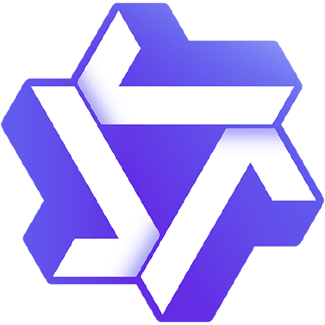

Coursework: Psychological Anthropology (Distinction), Anthropology of Religion (Distinction), Digital Anthropology, Gender and Kinship, Anthropological Research Methods.
Coursework: Global Communication, Data Visualization, Introduction to Statistics, Digital Media Marketing Strategy, Journalism Ethics and Media Regulation, Cross-cultural Multimedia News Editing.
Internship experience
02

Alibaba · Qwen
Creator Product Intern · Agent
Jun 2026 – Present
PROJECT 01
Qwen Create Agent Teams
A multi-agent system for end-to-end video creation
Built Skill creation and evaluation capabilities, with Runtime improvements for reusable video workflows.
Skill creation Agent
Helped launch an Agent that turns canvas workflows into editable Skill drafts and uses multimodal understanding to break down creative works. Helped build a supply of 100+ quality Skills.
Skill evaluation system
Built layered test sets, evaluation criteria, and an automated platform with Skill-specific instructions and controlled comparisons. Launched internally, covering 100+ Skills and their versions.
Runtime optimization & model adaptation
Designed a Subagent to compress conversation history, reducing long-task token usage by 5%. Updated Skill interfaces and model routing for compatibility with Wan 3.0 and Qwen Image 3.0.
Inside the evaluation approach+
Generated test instructions for each Skill’s capabilities and use cases. For each instruction, controlled model and tool conditions to compare no-Skill and different Skill-version results. Assessed node quality and end-to-end outcomes, then traced failures through tool calls and node outputs.
PROJECT 02
Qwen Create: overseas product exploration
North American demand validation & growth-feature planning
Explored market entry, acquisition features, and website planning for overseas growth.
Market selection & entry strategy
Evaluated organic traffic, willingness and ability to pay, and acquisition costs to select North America as the initial market.
Overseas marketing evaluation
Participated in Agent evaluation for North American and Latin American marketing scenarios. Authored the report on intent understanding, scripts, visuals, and editing, identifying strengths and improvement areas.
Search demand & SEO analysis
Prioritized background removal and AI face swap using search demand and conversion potential. Identified features better suited to display ads than search; worked with growth teams as overseas users grew by 50%.
Website MVP design
Mapped search intent to product capabilities. Planned feature and scenario pages with examples, input requirements, and clear entry points.
Improved creator discovery, brand collaboration, and creator monetization.
Creator search & matching
Contributed to periodic and time-sensitive creator labels and cross-category semantic matching improvements. A/B tests showed 21% search CTR versus 18% in the control; post-search order conversion rose from 4.0% to 4.4%.
Platform feature improvements
Helped turn client requirements into pricing, collaboration, scheduling, and invitation features after validating rule boundaries and risks. Supported requests worth over RMB 3 million; collaborating creators grew by 135%.
Creator opportunity matching
Organized 618 Spark Gala and home-renovation creator recruitment. Orders grew 25% month over month; recommended creators made up 2% of the pool and 11% of order value. Helped 400+ creators land their first brand deal.
Publicis Groupe
Brand Operations Intern
Aug – Nov 2023
Supported Changi Airport and Pepsi through digital proposals and creator campaigns.
Digital product design
Designed digital features for Changi Airport’s China proposal. Used mobile-platform habits and shopping behavior to propose platform-based touchpoints in place of website-led traffic; adopted in the final proposal.
Creator campaigns
Completed 130+ creator assessments, 65+ script reviews, and 50 collaborations in one month for Pepsi. Refined screening and collaboration processes, improving script approval by 30%.
Built a multi-agent assistant that uses account history and reader feedback to help smaller creators find repeatable topics and content structures. Applied to 50+ posts, with average readership increasing by approximately 18%.
How the assistant works+
Connects account diagnosis, topic generation, and structural review. Multiple agents simulate different audience perspectives, discuss candidate content, and summarize feedback for the creator. The project grew out of personal publishing and creator-consulting experience.
China Open
Overseas social media operations
English-language interviews & communication
Interviewed Zheng Qinwen, Jannik Sinner, and other players in English. Produced 60+ social posts across international and Chinese platforms; received the news center operations team’s Gold Award (top 5%).
Competition awards
2023
Beijing Cultural and Creative Design Competition
First Prize. Used Stable Diffusion to generate creative design assets, with ControlNet for finer control of the results.
Additional awards
National Excellence Award in the Beijing University Student Advertising Art Competition; municipal First Prize in the Challenge Cup’s social-governance research track.
Personal profile
04
Personal publishing
Write about overseas study and personal choices on Xiaohongshu @QSheep: 1.5K followers, 7K+ likes and saves, and 1.4K likes on the top post.
Creator ecosystem understanding
Connect platform supply, brand collaboration, and creator needs through work at Qwen, Pugongying, and my own account.
International user perspective
Bring anthropological training, overseas living, and English-language content experience to user research and product exploration.
Directing, writing & content creation
Directed 《禁忌话题》: one of five selected films in Apple’s China creative camp, Best Original Story, and 100K+ views. Led CUC’s Baiyang Drama Club and contributed to a Prism Theatre Festival award-winning production.